5.2 Endliche Automaten./course1/wly/05/02-finite-state-machines.wly:2:11
Grammatiken erlauben es uns, gewisse Formate zu./course1/wly/05/02-finite-state-machines.wly:4:5 beschreiben. Das reicht uns aber nicht: wir wollen Daten./course1/wly/05/02-finite-state-machines.wly:5:5 ./course1/wly/05/02-finite-state-machines.wly:6:5parsen./course1/wly/05/02-finite-state-machines.wly:6:6,./course1/wly/05/02-finite-state-machines.wly:6:13 im engen Sinne also eine grammatische Ableitung./course1/wly/05/02-finite-state-machines.wly:6:13 rekonstruieren und allgemein die Struktur eines gegebenen./course1/wly/05/02-finite-state-machines.wly:7:5 Wortes herausarbeiten. Ein bescheideneres Ziel ist es, für./course1/wly/05/02-finite-state-machines.wly:8:5 ein gegebenes Wort zu ./course1/wly/05/02-finite-state-machines.wly:9:5entscheiden./course1/wly/05/02-finite-state-machines.wly:9:28,./course1/wly/05/02-finite-state-machines.wly:9:40 ob es sich überhaupt./course1/wly/05/02-finite-state-machines.wly:9:40 aus einer Grammatik ableiten lässt. Für reguläre./course1/wly/05/02-finite-state-machines.wly:10:5 Grammatiken gibt es hierfür die ./course1/wly/05/02-finite-state-machines.wly:11:5endlichen Automaten./course1/wly/05/02-finite-state-machines.wly:11:38../course1/wly/05/02-finite-state-machines.wly:11:58 Sie./course1/wly/05/02-finite-state-machines.wly:11:58 können endliche Automaten verstehen als ein eingeschränktes./course1/wly/05/02-finite-state-machines.wly:12:5 Modell eines Rechners; oder als Blaupause für einen./course1/wly/05/02-finite-state-machines.wly:13:5 effizienten Algorithmus, um reguläre Grammatiken zu parsen../course1/wly/05/02-finite-state-machines.wly:14:5 Hier sehen Sie ein Beispiel für einen endlichen Automaten./course1/wly/05/02-finite-state-machines.wly:15:5 über dem Alphabet ./course1/wly/05/02-finite-state-machines.wly:16:5$\Sigma = \{x,y,z\}$./course1/wly/05/02-finite-state-machines.wly:16:23../course1/wly/05/02-finite-state-machines.wly:16:43 Die Idee ist, dass./course1/wly/05/02-finite-state-machines.wly:16:43 der Automat ein Wort ./course1/wly/05/02-finite-state-machines.wly:17:5$\alpha$./course1/wly/05/02-finite-state-machines.wly:17:26 Zeichen für Zeichen./course1/wly/05/02-finite-state-machines.wly:17:34 einliest. Die Pfeile zwischen den Kreisen (den ./course1/wly/05/02-finite-state-machines.wly:18:5Zuständen./course1/wly/05/02-finite-state-machines.wly:18:53 ./course1/wly/05/02-finite-state-machines.wly:18:63 des Automaten) zeigen an, in welchen neuen Zustand beim./course1/wly/05/02-finite-state-machines.wly:19:5 Lesen eines Zeichen gewechselt werden muss. Der Pfeil "aus./course1/wly/05/02-finite-state-machines.wly:20:5 dem Nichts", hier der von links nach ./course1/wly/05/02-finite-state-machines.wly:21:5$S$./course1/wly/05/02-finite-state-machines.wly:21:43,./course1/wly/05/02-finite-state-machines.wly:21:46 zeigt den./course1/wly/05/02-finite-state-machines.wly:21:46 ./course1/wly/05/02-finite-state-machines.wly:22:5Startzustand./course1/wly/05/02-finite-state-machines.wly:22:6 an, in welchem der Automat beginnt../course1/wly/05/02-finite-state-machines.wly:22:19
Um zu zeigen, wie der Automat ein Eingabewort verarbeitet,./course1/wly/05/02-finite-state-machines.wly:29:5 nehmen wir das Beispiel ./course1/wly/05/02-finite-state-machines.wly:30:5$\alpha = yxzxxyy$./course1/wly/05/02-finite-state-machines.wly:30:29../course1/wly/05/02-finite-state-machines.wly:30:47
course1/public/img/finite-state-automata/fsa-example-01-01.svg
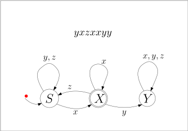
course1/public/img/finite-state-automata/fsa-example-01-02.svg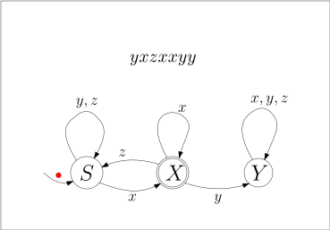
course1/public/img/finite-state-automata/fsa-example-01-03.svg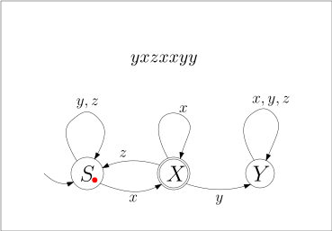
course1/public/img/finite-state-automata/fsa-example-01-04.svg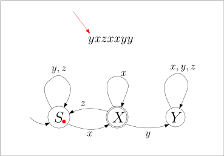
course1/public/img/finite-state-automata/fsa-example-01-05.svg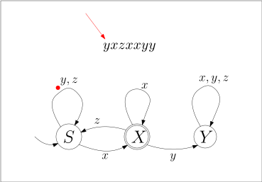
course1/public/img/finite-state-automata/fsa-example-01-06.svg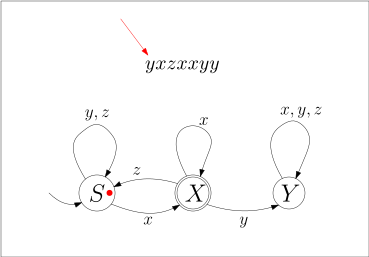
course1/public/img/finite-state-automata/fsa-example-01-07.svg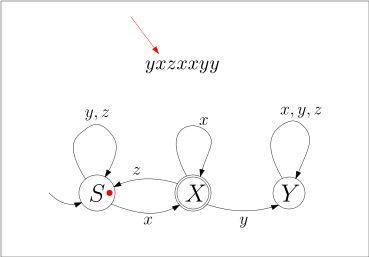
course1/public/img/finite-state-automata/fsa-example-01-08.svg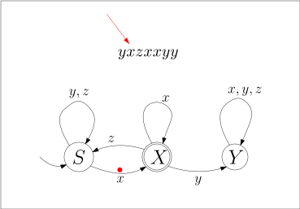
course1/public/img/finite-state-automata/fsa-example-01-09.svg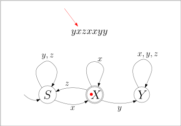
course1/public/img/finite-state-automata/fsa-example-01-10.svg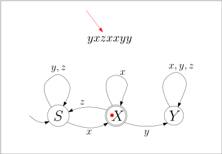
course1/public/img/finite-state-automata/fsa-example-01-11.svg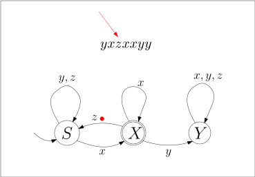
course1/public/img/finite-state-automata/fsa-example-01-12.svg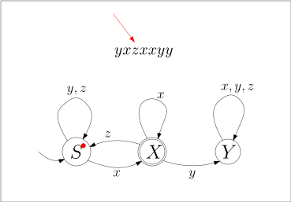
course1/public/img/finite-state-automata/fsa-example-01-13.svg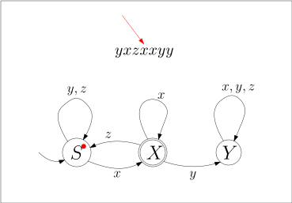
course1/public/img/finite-state-automata/fsa-example-01-14.svg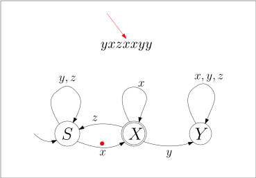
course1/public/img/finite-state-automata/fsa-example-01-15.svg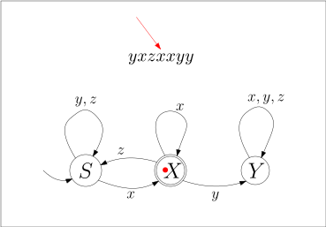
course1/public/img/finite-state-automata/fsa-example-01-16.svg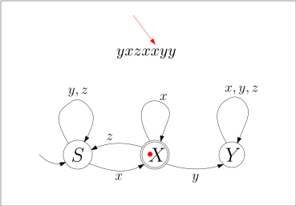
course1/public/img/finite-state-automata/fsa-example-01-17.svg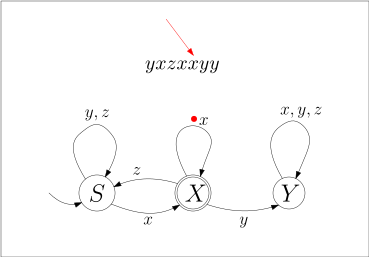
course1/public/img/finite-state-automata/fsa-example-01-18.svg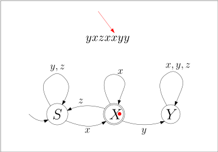
course1/public/img/finite-state-automata/fsa-example-01-19.svg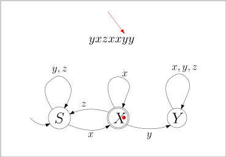
course1/public/img/finite-state-automata/fsa-example-01-20.svg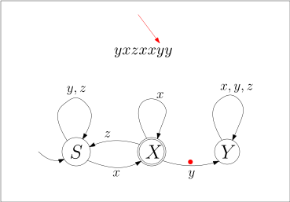
course1/public/img/finite-state-automata/fsa-example-01-21.svg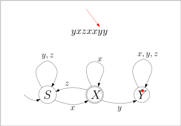
course1/public/img/finite-state-automata/fsa-example-01-22.svg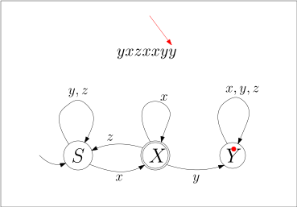
course1/public/img/finite-state-automata/fsa-example-01-23.svg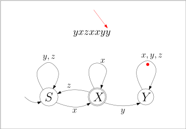
course1/public/img/finite-state-automata/fsa-example-01-24.svg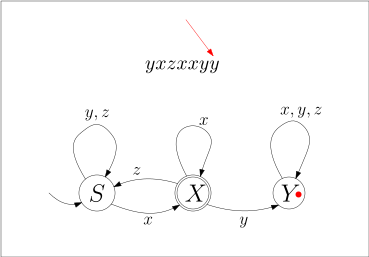
course1/public/img/finite-state-automata/fsa-example-01-25.svgIn diesem Beispiel endet der Automat im Zustand ./course1/wly/05/02-finite-state-machines.wly:59:5$Y$./course1/wly/05/02-finite-state-machines.wly:59:53../course1/wly/05/02-finite-state-machines.wly:59:56 Sie./course1/wly/05/02-finite-state-machines.wly:59:56 sehen, dass der Zustand ./course1/wly/05/02-finite-state-machines.wly:60:5$X$./course1/wly/05/02-finite-state-machines.wly:60:29 mit einem doppelten Rand./course1/wly/05/02-finite-state-machines.wly:60:32 markiert ist: dies symbolisiert, dass ./course1/wly/05/02-finite-state-machines.wly:61:5$X$./course1/wly/05/02-finite-state-machines.wly:61:43 ein./course1/wly/05/02-finite-state-machines.wly:61:46 ./course1/wly/05/02-finite-state-machines.wly:62:5akzeptierender./course1/wly/05/02-finite-state-machines.wly:62:6 Endzustand ist. Wenn der Automat ein Wort./course1/wly/05/02-finite-state-machines.wly:62:21 ./course1/wly/05/02-finite-state-machines.wly:63:5$\alpha$./course1/wly/05/02-finite-state-machines.wly:63:5 abgearbeitet hat, ./course1/wly/05/02-finite-state-machines.wly:63:13akzeptiert./course1/wly/05/02-finite-state-machines.wly:63:33 er es, wenn er in./course1/wly/05/02-finite-state-machines.wly:63:44 einem akzeptierenden Endzustand gelandet ist; ansonsten./course1/wly/05/02-finite-state-machines.wly:64:5 ./course1/wly/05/02-finite-state-machines.wly:65:5lehnt er es ab./course1/wly/05/02-finite-state-machines.wly:65:6../course1/wly/05/02-finite-state-machines.wly:65:21 In unserem Beispiel sehen wir also, dass./course1/wly/05/02-finite-state-machines.wly:65:21 der Automat das Eingabewort ./course1/wly/05/02-finite-state-machines.wly:66:5$yxzxxyy$./course1/wly/05/02-finite-state-machines.wly:66:33 ablehnt../course1/wly/05/02-finite-state-machines.wly:66:42
Definition 5.2.1 (Endlicher Automat, Finite State Machine)../course1/wly/05/02-finite-state-machines.wly:68:5 Ein endlicher./course1/wly/05/02-finite-state-machines.wly:70:53 Automat besteht aus einem endlichen Eingabealphaet./course1/wly/05/02-finite-state-machines.wly:71:9 ./course1/wly/05/02-finite-state-machines.wly:72:9$\Sigma$./course1/wly/05/02-finite-state-machines.wly:72:9,./course1/wly/05/02-finite-state-machines.wly:72:17 einer endlichen Menge ./course1/wly/05/02-finite-state-machines.wly:72:17$Q$./course1/wly/05/02-finite-state-machines.wly:72:41 von Zuständen, einem./course1/wly/05/02-finite-state-machines.wly:72:44 Startzustand ./course1/wly/05/02-finite-state-machines.wly:73:9$\qstart \in Q$./course1/wly/05/02-finite-state-machines.wly:73:22,./course1/wly/05/02-finite-state-machines.wly:73:37 einer Menge ./course1/wly/05/02-finite-state-machines.wly:73:37$F \subseteq Q$./course1/wly/05/02-finite-state-machines.wly:73:51 ./course1/wly/05/02-finite-state-machines.wly:73:66 von akzeptierenden Endzuständen und einer./course1/wly/05/02-finite-state-machines.wly:74:9 Zustandsübergangsfunktion./course1/wly/05/02-finite-state-machines.wly:75:9
$$
\begin{align*}
\delta : Q \times \Sigma \rightarrow Q \ .
\end{align*}
$$./course1/wly/05/02-finite-state-machines.wly:77:9
Formal gesehen ist also ein Automat ein Quintupel./course1/wly/05/02-finite-state-machines.wly:81:9 ./course1/wly/05/02-finite-state-machines.wly:82:9$M = (\Sigma, Q, \qstart, F, \delta)$./course1/wly/05/02-finite-state-machines.wly:82:9../course1/wly/05/02-finite-state-machines.wly:82:46
Die Idee ist, dass der Automat im Zustand ./course1/wly/05/02-finite-state-machines.wly:84:5$\qstart$./course1/wly/05/02-finite-state-machines.wly:84:47 ./course1/wly/05/02-finite-state-machines.wly:84:56 startet und nun in jedem Schritt ein weiteres Zeichen des./course1/wly/05/02-finite-state-machines.wly:85:5 Eingabewortes liest. Wenn er im Zustand ./course1/wly/05/02-finite-state-machines.wly:86:5$q$./course1/wly/05/02-finite-state-machines.wly:86:45 ist und das./course1/wly/05/02-finite-state-machines.wly:86:48 Zeichen ./course1/wly/05/02-finite-state-machines.wly:87:5$x$./course1/wly/05/02-finite-state-machines.wly:87:13 liest, so wechselt er in den Zustand./course1/wly/05/02-finite-state-machines.wly:87:16 ./course1/wly/05/02-finite-state-machines.wly:88:5$\delta(q,x)$./course1/wly/05/02-finite-state-machines.wly:88:5../course1/wly/05/02-finite-state-machines.wly:88:18 Statt ./course1/wly/05/02-finite-state-machines.wly:88:18$\delta(q,x) = q'$./course1/wly/05/02-finite-state-machines.wly:88:26 verwenden wir die./course1/wly/05/02-finite-state-machines.wly:88:44 leichter zu lesende Schreibweise./course1/wly/05/02-finite-state-machines.wly:89:5
$$
q \stackrel{x}{\rightarrow} q' \ .
$$./course1/wly/05/02-finite-state-machines.wly:91:5
Wenn das Wort zu Ende ist, dann ./course1/wly/05/02-finite-state-machines.wly:95:5akzeptiert./course1/wly/05/02-finite-state-machines.wly:95:38 der Automat,./course1/wly/05/02-finite-state-machines.wly:95:49 wenn er in einem akzeptierenden Zustand angekommen ist,./course1/wly/05/02-finite-state-machines.wly:96:5 also in ./course1/wly/05/02-finite-state-machines.wly:97:5$F$./course1/wly/05/02-finite-state-machines.wly:97:13../course1/wly/05/02-finite-state-machines.wly:97:16
Beispiel 5.2.2./course1/wly/05/02-finite-state-machines.wly:99:5 ./course1/wly/05/02-finite-state-machines.wly:99:5 Betrachten wir den endlichen Automaten./course1/wly/05/02-finite-state-machines.wly:100:9
und stellen ihn gemäß ./course1/wly/05/02-finite-state-machines.wly:107:9Definition 5.2.1 als Quintupel./course1/wly/05/02-finite-state-machines.wly:108:9 ./course1/wly/05/02-finite-state-machines.wly:109:9$M = (\Sigma, Q, \qstart, F, \delta)$./course1/wly/05/02-finite-state-machines.wly:109:9 dar mit./course1/wly/05/02-finite-state-machines.wly:109:46
$$
\begin{align*}
\Sigma&= \{x,y,z\} \\
Q&= \{S, X, Y\} \\
\qstart&= S \\
F&= \{X\} \ .
\end{align*}
$$./course1/wly/05/02-finite-state-machines.wly:111:9
Um noch die Zustandsübergangsfunktion ./course1/wly/05/02-finite-state-machines.wly:118:9$\delta$./course1/wly/05/02-finite-state-machines.wly:118:47 ./course1/wly/05/02-finite-state-machines.wly:118:55 darzustellen, müssen wir uns überlegen, wie wir Funktionen./course1/wly/05/02-finite-state-machines.wly:119:9 überhaupt darstellen. Da ./course1/wly/05/02-finite-state-machines.wly:120:9$\delta$./course1/wly/05/02-finite-state-machines.wly:120:34 eine endliche Funktion./course1/wly/05/02-finite-state-machines.wly:120:42 ist, können wir einfach alle Eingabewert-Ausgabewert-Paare./course1/wly/05/02-finite-state-machines.wly:121:9 hinschreiben, am Besten in einer Tabelle, so wie wir es./course1/wly/05/02-finite-state-machines.wly:122:9 bereits bei Booleschen Funktionen mit Wahrheitstabellen./course1/wly/05/02-finite-state-machines.wly:123:9 getan haben. ./course1/wly/05/02-finite-state-machines.wly:124:9$\delta$./course1/wly/05/02-finite-state-machines.wly:124:22 ist also./course1/wly/05/02-finite-state-machines.wly:124:30
$$
\begin{align*}
\begin{array}{cc|c}
q&\sigma&\delta(q,x) \\ \hline
S&x&X \\
S&y&S \\
S&z&S \\
X&x&X \\
X&y&Y \\
X&z&S \\
Y&x&Y \\
Y&y&Y \\
Y&z&Y
\end{array}
\end{align*}
$$./course1/wly/05/02-finite-state-machines.wly:126:9
Da die Funktion ./course1/wly/05/02-finite-state-machines.wly:141:9$\delta$./course1/wly/05/02-finite-state-machines.wly:141:25 bei jedem endlichen Automaten./course1/wly/05/02-finite-state-machines.wly:141:33 genau zwei Eingabeparameter hat, können wir es eventuell./course1/wly/05/02-finite-state-machines.wly:142:9 übersichtlicher als zweidimensionale Tabelle darstellen:./course1/wly/05/02-finite-state-machines.wly:143:9
$$
\begin{align*}
\begin{array}{c|c|c|c}
&x&y&z \\ \hline
S&X&S&S \\ \hline
X&X&Y&S \\ \hline
Y&Y&Y&Y
\end{array}
\end{align*}
$$./course1/wly/05/02-finite-state-machines.wly:145:9
Diese zwei Tabellen dienen in diesem Beispiel aber nur./course1/wly/05/02-finite-state-machines.wly:154:9 dazu, noch einmal zu illustrieren, was ich damit meine,./course1/wly/05/02-finite-state-machines.wly:155:9 wenn ich sage, dass ./course1/wly/05/02-finite-state-machines.wly:156:9$\delta$./course1/wly/05/02-finite-state-machines.wly:156:29 eine Funktion von./course1/wly/05/02-finite-state-machines.wly:156:37 ./course1/wly/05/02-finite-state-machines.wly:157:9$Q \times \Sigma$./course1/wly/05/02-finite-state-machines.wly:157:9 nach ./course1/wly/05/02-finite-state-machines.wly:157:26$Q$./course1/wly/05/02-finite-state-machines.wly:157:32 ist. Wenn Sie selbst an./course1/wly/05/02-finite-state-machines.wly:157:35 endlichen Automaten rumbasteln, empfehle ich Ihnen, die./course1/wly/05/02-finite-state-machines.wly:158:9 Funktion ./course1/wly/05/02-finite-state-machines.wly:159:9$\delta$./course1/wly/05/02-finite-state-machines.wly:159:18 graphisch mit Kreisen und Pfeilen./course1/wly/05/02-finite-state-machines.wly:159:26 darzustellen, so wie wir es oben getan haben:./course1/wly/05/02-finite-state-machines.wly:160:9
Das ist eine völlig legitime Notation für eine Funktion./course1/wly/05/02-finite-state-machines.wly:167:9 ./course1/wly/05/02-finite-state-machines.wly:168:9$\delta: Q \times \Sigma \rightarrow Q$./course1/wly/05/02-finite-state-machines.wly:168:9 und genau so./course1/wly/05/02-finite-state-machines.wly:168:48 formal wie die Tabellenschreibweise../course1/wly/05/02-finite-state-machines.wly:169:9
Definition 5.2.3 (Erweiterte Zuständsübergangsfunktion)./course1/wly/05/02-finite-state-machines.wly:171:5../course1/wly/05/02-finite-state-machines.wly:172:49 Für einen./course1/wly/05/02-finite-state-machines.wly:172:49 endlichen Automaten ./course1/wly/05/02-finite-state-machines.wly:173:9$(\Sigma, Q, \qstart, F, \delta)$./course1/wly/05/02-finite-state-machines.wly:173:29 ./course1/wly/05/02-finite-state-machines.wly:173:62 definieren wir die ./course1/wly/05/02-finite-state-machines.wly:174:9erweiterte Zustandsübergangsfunktion./course1/wly/05/02-finite-state-machines.wly:174:29 ./course1/wly/05/02-finite-state-machines.wly:174:66 ./course1/wly/05/02-finite-state-machines.wly:175:9$\hat{\delta}: Q \times \Sigma^* \rightarrow Q$./course1/wly/05/02-finite-state-machines.wly:175:9 rekursiv./course1/wly/05/02-finite-state-machines.wly:175:56 wie folgt:./course1/wly/05/02-finite-state-machines.wly:176:9
$$
\begin{align*}
\hat{\delta} (q, \epsilon)&= q \\
\hat{\delta} (q, x\alpha)&= \hat{\delta} (\delta(x), \alpha) \ .
\end{align*}
$$./course1/wly/05/02-finite-state-machines.wly:178:9
$\hat{\delta} (q, \alpha) = q'$./course1/wly/05/02-finite-state-machines.wly:183:9 heißt also, dass der./course1/wly/05/02-finite-state-machines.wly:183:40 Automat, wenn er sich im Zustand ./course1/wly/05/02-finite-state-machines.wly:184:9$q$./course1/wly/05/02-finite-state-machines.wly:184:42 befindet und das Wort./course1/wly/05/02-finite-state-machines.wly:184:45 ./course1/wly/05/02-finite-state-machines.wly:185:9$\alpha$./course1/wly/05/02-finite-state-machines.wly:185:9 abarbeitet, er danach im Zustand ./course1/wly/05/02-finite-state-machines.wly:185:17$q'$./course1/wly/05/02-finite-state-machines.wly:185:51 landet. Wir./course1/wly/05/02-finite-state-machines.wly:185:55 schreiben auch kompakt./course1/wly/05/02-finite-state-machines.wly:186:9
$$
q \stackrel{\alpha}{\rightarrow} q' \ .
$$./course1/wly/05/02-finite-state-machines.wly:188:9
Definition 5.2.4 (Akzeptierte Sprache)../course1/wly/05/02-finite-state-machines.wly:192:5 Sei./course1/wly/05/02-finite-state-machines.wly:193:33 ./course1/wly/05/02-finite-state-machines.wly:194:9$M = (\Sigma, Q, \qstart, F, \delta)$./course1/wly/05/02-finite-state-machines.wly:194:9 ein endlicher./course1/wly/05/02-finite-state-machines.wly:194:46 Automat. Die von ./course1/wly/05/02-finite-state-machines.wly:195:9$M$./course1/wly/05/02-finite-state-machines.wly:195:26 akzeptierte Sprache ist./course1/wly/05/02-finite-state-machines.wly:195:29
$$
\begin{align*}
L(M) := \{ \alpha \in \Sigma \ | \ \hat{\delta}(\qstart, \alpha) \in F \} \ .
\end{align*}
$$./course1/wly/05/02-finite-state-machines.wly:197:9
Beispiel 5.2.5./course1/wly/05/02-finite-state-machines.wly:201:5 ./course1/wly/05/02-finite-state-machines.wly:201:5 Der endliche Automat, den wir oben bereits eingeführt./course1/wly/05/02-finite-state-machines.wly:202:9 haben:./course1/wly/05/02-finite-state-machines.wly:203:9
akzeptiert die Sprache aller ./course1/wly/05/02-finite-state-machines.wly:210:9$\alpha \in \{x,y,z\}$./course1/wly/05/02-finite-state-machines.wly:210:38,./course1/wly/05/02-finite-state-machines.wly:210:60 die./course1/wly/05/02-finite-state-machines.wly:210:60 auf ./course1/wly/05/02-finite-state-machines.wly:211:9$x$./course1/wly/05/02-finite-state-machines.wly:211:13 enden und nicht die Buchstabenfolge ./course1/wly/05/02-finite-state-machines.wly:211:16$xy$./course1/wly/05/02-finite-state-machines.wly:211:53 ./course1/wly/05/02-finite-state-machines.wly:211:57 enthalten../course1/wly/05/02-finite-state-machines.wly:212:9
Übungsaufgabe 5.2.1./course1/wly/05/02-finite-state-machines.wly:214:5 ./course1/wly/05/02-finite-state-machines.wly:214:5 Ändern Sie den Automaten aus dem letzten Beispiel so ab,./course1/wly/05/02-finite-state-machines.wly:215:9 dass die Bedingung ./course1/wly/05/02-finite-state-machines.wly:216:9"die auf ./course1/wly/05/02-finite-state-machines.wly:216:29$x$./course1/wly/05/02-finite-state-machines.wly:216:38 enden"./course1/wly/05/02-finite-state-machines.wly:216:41 entfällt, er also./course1/wly/05/02-finite-state-machines.wly:216:49 alle Wörter akzeptiert, die die Folge ./course1/wly/05/02-finite-state-machines.wly:217:9$xy$./course1/wly/05/02-finite-state-machines.wly:217:47 nicht./course1/wly/05/02-finite-state-machines.wly:217:51 enthalten../course1/wly/05/02-finite-state-machines.wly:218:9
Übungsaufgabe 5.2.2./course1/wly/05/02-finite-state-machines.wly:220:5 ./course1/wly/05/02-finite-state-machines.wly:220:5 Zeichnen Sie einen Automaten für die Sprache aller Wörter./course1/wly/05/02-finite-state-machines.wly:221:9 über ./course1/wly/05/02-finite-state-machines.wly:222:9$\{a,b,c,d\}$./course1/wly/05/02-finite-state-machines.wly:222:14,./course1/wly/05/02-finite-state-machines.wly:222:27 die die Folge ./course1/wly/05/02-finite-state-machines.wly:222:27$a,b,c,d$./course1/wly/05/02-finite-state-machines.wly:222:43 enthalten../course1/wly/05/02-finite-state-machines.wly:222:52
Übungsaufgabe 5.2.3./course1/wly/05/02-finite-state-machines.wly:224:5 ./course1/wly/05/02-finite-state-machines.wly:224:5 Zeichnen Sie einen Automaten für die Sprache aller Wörter./course1/wly/05/02-finite-state-machines.wly:225:9 über ./course1/wly/05/02-finite-state-machines.wly:226:9$\{a,b,c,d\}$./course1/wly/05/02-finite-state-machines.wly:226:14,./course1/wly/05/02-finite-state-machines.wly:226:27 die genau vier ./course1/wly/05/02-finite-state-machines.wly:226:27$a$./course1/wly/05/02-finite-state-machines.wly:226:44 enthalten../course1/wly/05/02-finite-state-machines.wly:226:47
Endliche Automaten zu regulären Grammatiken./course1/wly/05/02-finite-state-machines.wly:229:9
Wenn wir einen endlichen Automaten gegeben haben, dann./course1/wly/05/02-finite-state-machines.wly:231:5 können wir leicht eine entsprechende reguläre Grammatik./course1/wly/05/02-finite-state-machines.wly:232:5 dazu bauen, indem wir alle Pfeile einfach in Produktionen./course1/wly/05/02-finite-state-machines.wly:233:5 übersetzen. Für den Automaten./course1/wly/05/02-finite-state-machines.wly:234:5
würde dies beispielsweise die folgenden Produktionen./course1/wly/05/02-finite-state-machines.wly:241:5 ergeben:./course1/wly/05/02-finite-state-machines.wly:242:5
$$
\begin{align*}
S&\rightarrow y S \ | \ zS \ | \ x X \\
X&\rightarrow x X \ | \ z S \ | \ y Y \\
Y&\rightarrow x Y \ | \ y Y \ | \ z Y \\
\end{align*}
$$./course1/wly/05/02-finite-state-machines.wly:244:5
und, weil ./course1/wly/05/02-finite-state-machines.wly:250:5$X$./course1/wly/05/02-finite-state-machines.wly:250:15 ein akzeptierender Zustand ist,./course1/wly/05/02-finite-state-machines.wly:250:18
$$
\begin{align*}
X&\rightarrow \epsilon
\end{align*}
$$./course1/wly/05/02-finite-state-machines.wly:252:5
Dies geht ganz allgemein:./course1/wly/05/02-finite-state-machines.wly:256:5
Theorem 5.2.6./course1/wly/05/02-finite-state-machines.wly:258:5 ./course1/wly/05/02-finite-state-machines.wly:258:5 Sei ./course1/wly/05/02-finite-state-machines.wly:260:9$M = (\Sigma, Q, \qstart, F, \delta)$./course1/wly/05/02-finite-state-machines.wly:260:13 ein endlicher./course1/wly/05/02-finite-state-machines.wly:260:50 Automat. Dann gibt es eine reguläre Grammatik./course1/wly/05/02-finite-state-machines.wly:261:9 ./course1/wly/05/02-finite-state-machines.wly:262:9$G = (\Sigma, N, P, S)$./course1/wly/05/02-finite-state-machines.wly:262:9 mit ./course1/wly/05/02-finite-state-machines.wly:262:32$L(G) = L(M)$./course1/wly/05/02-finite-state-machines.wly:262:37../course1/wly/05/02-finite-state-machines.wly:262:50
Wir nehmen dies als Anlass, um mal wieder einen./course1/wly/05/02-finite-state-machines.wly:264:5 Induktionsbeweis im Detail durchzuführen../course1/wly/05/02-finite-state-machines.wly:265:5
Beweis Wir setzen ./course1/wly/05/02-finite-state-machines.wly:268:9$N = Q$./course1/wly/05/02-finite-state-machines.wly:268:20 und ./course1/wly/05/02-finite-state-machines.wly:268:27$S = \qstart$./course1/wly/05/02-finite-state-machines.wly:268:32 und führen für jeden./course1/wly/05/02-finite-state-machines.wly:268:45 Zustandsübergang, der von ./course1/wly/05/02-finite-state-machines.wly:269:9$\delta$./course1/wly/05/02-finite-state-machines.wly:269:35 beschrieben wird, eine./course1/wly/05/02-finite-state-machines.wly:269:43 Ableitungsregel ein:./course1/wly/05/02-finite-state-machines.wly:270:9
$$
\begin{align*}
q_1 \stackrel{x}{\rightarrow} q_2&\quad \textnormal{ wird zur Produktion } \quad
q_1 \rightarrow xq_2
\end{align*}
$$./course1/wly/05/02-finite-state-machines.wly:272:9
Hiermit erhalten wir eine "Zwischengrammatik" ./course1/wly/05/02-finite-state-machines.wly:277:9$G'$./course1/wly/05/02-finite-state-machines.wly:277:55 . Die./course1/wly/05/02-finite-state-machines.wly:277:59 endgültige Grammatik ./course1/wly/05/02-finite-state-machines.wly:278:9$G$./course1/wly/05/02-finite-state-machines.wly:278:30 erhalten wir, indem wir für jeden./course1/wly/05/02-finite-state-machines.wly:278:33 akzeptierenden Zustand ./course1/wly/05/02-finite-state-machines.wly:279:9$q \in N$./course1/wly/05/02-finite-state-machines.wly:279:32 die Produktion./course1/wly/05/02-finite-state-machines.wly:279:41
$$
\begin{align*}
q \rightarrow \epsilon
\end{align*}
$$./course1/wly/05/02-finite-state-machines.wly:281:9
einführen. Wir zeigen nun per Induktion:./course1/wly/05/02-finite-state-machines.wly:285:9
Behauptung 5.2.7./course1/wly/05/02-finite-state-machines.wly:287:9 ./course1/wly/05/02-finite-state-machines.wly:287:9 Sei ./course1/wly/05/02-finite-state-machines.wly:288:13$\alpha \in \Sigma^*$./course1/wly/05/02-finite-state-machines.wly:288:17 und ./course1/wly/05/02-finite-state-machines.wly:288:38$q, q' \in Q$./course1/wly/05/02-finite-state-machines.wly:288:43../course1/wly/05/02-finite-state-machines.wly:288:56 Dann gilt./course1/wly/05/02-finite-state-machines.wly:288:56 ./course1/wly/05/02-finite-state-machines.wly:289:13$q \stackrel{\alpha}{\rightarrow} q'$./course1/wly/05/02-finite-state-machines.wly:289:13 genau dann, wenn./course1/wly/05/02-finite-state-machines.wly:289:50 ./course1/wly/05/02-finite-state-machines.wly:290:13$q \Rightarrow^* \alpha q'$./course1/wly/05/02-finite-state-machines.wly:290:13 in Grammatik ./course1/wly/05/02-finite-state-machines.wly:290:40$G'$./course1/wly/05/02-finite-state-machines.wly:290:54 gilt../course1/wly/05/02-finite-state-machines.wly:290:58
Bevor wir diese Behauptung beweisen, achten Sie auf die./course1/wly/05/02-finite-state-machines.wly:292:9 Bedeutung der Symbole. Der einfache Pfeil in./course1/wly/05/02-finite-state-machines.wly:293:9 ./course1/wly/05/02-finite-state-machines.wly:294:9$q \stackrel{\alpha}{\rightarrow} q'$./course1/wly/05/02-finite-state-machines.wly:294:9 beschreibt die./course1/wly/05/02-finite-state-machines.wly:294:46 Arbeitsweise des endlichen Automaten, dass nämlich das./course1/wly/05/02-finite-state-machines.wly:295:9 Verarbeiten von ./course1/wly/05/02-finite-state-machines.wly:296:9$\alpha$./course1/wly/05/02-finite-state-machines.wly:296:25 den Automaten vom Zustand ./course1/wly/05/02-finite-state-machines.wly:296:33$q$./course1/wly/05/02-finite-state-machines.wly:296:60 in./course1/wly/05/02-finite-state-machines.wly:296:63 den Zustand ./course1/wly/05/02-finite-state-machines.wly:297:9$q'$./course1/wly/05/02-finite-state-machines.wly:297:21 führt. Der doppelte Pfeil in./course1/wly/05/02-finite-state-machines.wly:297:25 ./course1/wly/05/02-finite-state-machines.wly:298:9$q \Rightarrow^* \alpha q'$./course1/wly/05/02-finite-state-machines.wly:298:9 sagt aus, dass aus dem./course1/wly/05/02-finite-state-machines.wly:298:36 Nichtterminalsymbol ./course1/wly/05/02-finite-state-machines.wly:299:9$q$./course1/wly/05/02-finite-state-machines.wly:299:29 in der Grammatik ./course1/wly/05/02-finite-state-machines.wly:299:32$G$./course1/wly/05/02-finite-state-machines.wly:299:50 in./course1/wly/05/02-finite-state-machines.wly:299:53 möglicherweise mehreren Schritten die Wortform ./course1/wly/05/02-finite-state-machines.wly:300:9$\alpha q'$./course1/wly/05/02-finite-state-machines.wly:300:56 ./course1/wly/05/02-finite-state-machines.wly:300:67 abgeleitet werden kann. Der Pfeil ./course1/wly/05/02-finite-state-machines.wly:301:9$\rightarrow$./course1/wly/05/02-finite-state-machines.wly:301:43 "lebt"./course1/wly/05/02-finite-state-machines.wly:301:56 also im Automaten ./course1/wly/05/02-finite-state-machines.wly:302:9$M$./course1/wly/05/02-finite-state-machines.wly:302:27,./course1/wly/05/02-finite-state-machines.wly:302:30 der Pfeil ./course1/wly/05/02-finite-state-machines.wly:302:30$\Rightarrow^*$./course1/wly/05/02-finite-state-machines.wly:302:42 lebt in./course1/wly/05/02-finite-state-machines.wly:302:57 der Grammatik ./course1/wly/05/02-finite-state-machines.wly:303:9$G'$./course1/wly/05/02-finite-state-machines.wly:303:23../course1/wly/05/02-finite-state-machines.wly:303:27
Beweis Wir verwenden Induktion über die Länge des Wortes ./course1/wly/05/02-finite-state-machines.wly:306:13$\alpha$./course1/wly/05/02-finite-state-machines.wly:306:63../course1/wly/05/02-finite-state-machines.wly:306:71
Induktionsbasis../course1/wly/05/02-finite-state-machines.wly:308:14 Wenn ./course1/wly/05/02-finite-state-machines.wly:308:31$\alpha = \epsilon$./course1/wly/05/02-finite-state-machines.wly:308:37 gilt, also./course1/wly/05/02-finite-state-machines.wly:308:56 ./course1/wly/05/02-finite-state-machines.wly:309:13$\alpha$./course1/wly/05/02-finite-state-machines.wly:309:13 die Länge 0 hat, dann gilt./course1/wly/05/02-finite-state-machines.wly:309:21 ./course1/wly/05/02-finite-state-machines.wly:310:13$q \stackrel{\epsilon}{\rightarrow} q'$./course1/wly/05/02-finite-state-machines.wly:310:13 genau dann, wenn./course1/wly/05/02-finite-state-machines.wly:310:52 ./course1/wly/05/02-finite-state-machines.wly:311:13$q = q'$./course1/wly/05/02-finite-state-machines.wly:311:13 ist. Wie kann nun ./course1/wly/05/02-finite-state-machines.wly:311:21$q \Rightarrow^* \epsilon q'$./course1/wly/05/02-finite-state-machines.wly:311:40 ./course1/wly/05/02-finite-state-machines.wly:311:69 in ./course1/wly/05/02-finite-state-machines.wly:312:13$G'$./course1/wly/05/02-finite-state-machines.wly:312:16 gelten? Beachten Sie, dass jede Produktion in ./course1/wly/05/02-finite-state-machines.wly:312:20$G'$./course1/wly/05/02-finite-state-machines.wly:312:67 ./course1/wly/05/02-finite-state-machines.wly:312:71 ein Terminalsymbol erzeugt; ./course1/wly/05/02-finite-state-machines.wly:313:13$q \Rightarrow^* \epsilon q'$./course1/wly/05/02-finite-state-machines.wly:313:41 ./course1/wly/05/02-finite-state-machines.wly:313:70 kann also nur gelten, wenn ./course1/wly/05/02-finite-state-machines.wly:314:13keine./course1/wly/05/02-finite-state-machines.wly:314:41 Produktion erfolgt ist./course1/wly/05/02-finite-state-machines.wly:314:47 und somit ./course1/wly/05/02-finite-state-machines.wly:315:13$q = q'$./course1/wly/05/02-finite-state-machines.wly:315:23 gilt. Wir sehen: beide Aussagen sind./course1/wly/05/02-finite-state-machines.wly:315:31 äquivalent zu ./course1/wly/05/02-finite-state-machines.wly:316:13$q = q'$./course1/wly/05/02-finite-state-machines.wly:316:27 und somit auch äquivalent./course1/wly/05/02-finite-state-machines.wly:316:35 zueinander../course1/wly/05/02-finite-state-machines.wly:317:13
Induktionsschritt./course1/wly/05/02-finite-state-machines.wly:319:14../course1/wly/05/02-finite-state-machines.wly:319:32 Wenn ./course1/wly/05/02-finite-state-machines.wly:319:32$\alpha$./course1/wly/05/02-finite-state-machines.wly:319:39 die Länge ./course1/wly/05/02-finite-state-machines.wly:319:47$n+1$./course1/wly/05/02-finite-state-machines.wly:319:58 hat, so./course1/wly/05/02-finite-state-machines.wly:319:63 schreiben wir ./course1/wly/05/02-finite-state-machines.wly:320:13$\alpha = x \beta$./course1/wly/05/02-finite-state-machines.wly:320:27 für ein Wort./course1/wly/05/02-finite-state-machines.wly:320:45 ./course1/wly/05/02-finite-state-machines.wly:321:13$\beta \in \Sigma^*$./course1/wly/05/02-finite-state-machines.wly:321:13 der Länge ./course1/wly/05/02-finite-state-machines.wly:321:33$n$./course1/wly/05/02-finite-state-machines.wly:321:44../course1/wly/05/02-finite-state-machines.wly:321:47 Per./course1/wly/05/02-finite-state-machines.wly:321:47 Induktionshypothese können wir nun davon ausgehen, dass für./course1/wly/05/02-finite-state-machines.wly:322:13 alle ./course1/wly/05/02-finite-state-machines.wly:323:13$q_1, q_2 \in Q$./course1/wly/05/02-finite-state-machines.wly:323:18 die Aussage./course1/wly/05/02-finite-state-machines.wly:323:34 ./course1/wly/05/02-finite-state-machines.wly:324:13$q_1 \stackrel{\beta}{\rightarrow} q_2$./course1/wly/05/02-finite-state-machines.wly:324:13 genau dann gilt,./course1/wly/05/02-finite-state-machines.wly:324:52 wenn ./course1/wly/05/02-finite-state-machines.wly:325:13$q_1 \Rightarrow^* \beta q_2$./course1/wly/05/02-finite-state-machines.wly:325:18 gilt. Unser Ziel ist./course1/wly/05/02-finite-state-machines.wly:325:47 es, zu zeigen, dass die beiden folgenden Aussagen./course1/wly/05/02-finite-state-machines.wly:326:13 äquivalent sind:./course1/wly/05/02-finite-state-machines.wly:327:13
-
$q \stackrel{x \beta}{\rightarrow} q'$./course1/wly/05/02-finite-state-machines.wly:331:21 im endlichen./course1/wly/05/02-finite-state-machines.wly:331:59 Automaten ./course1/wly/05/02-finite-state-machines.wly:332:21$M$./course1/wly/05/02-finite-state-machines.wly:332:31,./course1/wly/05/02-finite-state-machines.wly:332:34
-
$q \Rightarrow^* x \beta q'$./course1/wly/05/02-finite-state-machines.wly:335:21 in der Grammatik ./course1/wly/05/02-finite-state-machines.wly:335:49$G'$./course1/wly/05/02-finite-state-machines.wly:335:67 ../course1/wly/05/02-finite-state-machines.wly:335:71
Wir müssen beide Richtungen zeigen, also zeigen, dass aus./course1/wly/05/02-finite-state-machines.wly:337:13 Aussage (1) die Aussage (2) folgt und umgekehrt../course1/wly/05/02-finite-state-machines.wly:338:13
Aus (1) folgt (2)../course1/wly/05/02-finite-state-machines.wly:340:14 Nehmen wir also an, dass./course1/wly/05/02-finite-state-machines.wly:340:33 ./course1/wly/05/02-finite-state-machines.wly:341:13$q \stackrel{x \beta}{\rightarrow} q'$./course1/wly/05/02-finite-state-machines.wly:341:13 gilt und bezeichnen./course1/wly/05/02-finite-state-machines.wly:341:51 ./course1/wly/05/02-finite-state-machines.wly:342:13$q_1 := \delta(q,x)$./course1/wly/05/02-finite-state-machines.wly:342:13../course1/wly/05/02-finite-state-machines.wly:342:33 Es gilt also./course1/wly/05/02-finite-state-machines.wly:342:33
$$
q \stackrel{x}{\rightarrow} q_1 \stackrel{\beta}{\rightarrow} q'
$$./course1/wly/05/02-finite-state-machines.wly:344:13
Der erste Teil, also ./course1/wly/05/02-finite-state-machines.wly:348:13$q \stackrel{x}{\rightarrow} q_1$./course1/wly/05/02-finite-state-machines.wly:348:34,./course1/wly/05/02-finite-state-machines.wly:348:67 ./course1/wly/05/02-finite-state-machines.wly:348:67 bedeutet, dass wir in ./course1/wly/05/02-finite-state-machines.wly:349:13$G'$./course1/wly/05/02-finite-state-machines.wly:349:35 die Produktion./course1/wly/05/02-finite-state-machines.wly:349:39 ./course1/wly/05/02-finite-state-machines.wly:350:13$q \rightarrow xq_1$./course1/wly/05/02-finite-state-machines.wly:350:13 eingeführt haben. Auf den zweiten./course1/wly/05/02-finite-state-machines.wly:350:33 Teil, also ./course1/wly/05/02-finite-state-machines.wly:351:13$q_1 \stackrel{\beta}{\rightarrow} q'$./course1/wly/05/02-finite-state-machines.wly:351:24,./course1/wly/05/02-finite-state-machines.wly:351:62 können./course1/wly/05/02-finite-state-machines.wly:351:62 wir die Induktionshypothese anwenden und schließen, dass./course1/wly/05/02-finite-state-machines.wly:352:13 ./course1/wly/05/02-finite-state-machines.wly:353:13$q_1 \Rightarrow^* \beta q'$./course1/wly/05/02-finite-state-machines.wly:353:13 gilt. Nun können wir mit dem./course1/wly/05/02-finite-state-machines.wly:353:41 Nichtterminal ./course1/wly/05/02-finite-state-machines.wly:354:13$q$./course1/wly/05/02-finite-state-machines.wly:354:27 beginnen, die Produktion./course1/wly/05/02-finite-state-machines.wly:354:30 ./course1/wly/05/02-finite-state-machines.wly:355:13$q \rightarrow x q_1$./course1/wly/05/02-finite-state-machines.wly:355:13 anwenden und dann mit ./course1/wly/05/02-finite-state-machines.wly:355:34$q_1$./course1/wly/05/02-finite-state-machines.wly:355:57 ./course1/wly/05/02-finite-state-machines.wly:355:62 fortfahrend die Wortform ./course1/wly/05/02-finite-state-machines.wly:356:13$\beta q'$./course1/wly/05/02-finite-state-machines.wly:356:38 ableiten, also./course1/wly/05/02-finite-state-machines.wly:356:48
$$
q \Rightarrow x q_1 \Rightarrow^* x \beta q' \ .
$$./course1/wly/05/02-finite-state-machines.wly:358:13
Dies zeigt die erste Richtung../course1/wly/05/02-finite-state-machines.wly:362:13
Aus (2) folgt (1)../course1/wly/05/02-finite-state-machines.wly:364:14 Nun nehmen wir an, dass./course1/wly/05/02-finite-state-machines.wly:364:33 ./course1/wly/05/02-finite-state-machines.wly:365:13$q \Rightarrow^* x \beta q'$./course1/wly/05/02-finite-state-machines.wly:365:13 gilt. Untersuchen wir die./course1/wly/05/02-finite-state-machines.wly:365:41 erste Produktion, die in dieser Ableitung verwendet worden./course1/wly/05/02-finite-state-machines.wly:366:13 ist. Alle Produktionen in ./course1/wly/05/02-finite-state-machines.wly:367:13$G'$./course1/wly/05/02-finite-state-machines.wly:367:39 erzeugen ein./course1/wly/05/02-finite-state-machines.wly:367:43 Terminalsymbol, also muss es eine Produktion der Form./course1/wly/05/02-finite-state-machines.wly:368:13
$$
q \rightarrow x q_1
$$./course1/wly/05/02-finite-state-machines.wly:370:13
gewesen sein. Die Ableitung hat also die Form./course1/wly/05/02-finite-state-machines.wly:374:13
$$
\begin{align*}
q \Rightarrow x q_1 \Rightarrow^* x \beta q' \ ,
\end{align*}
$$./course1/wly/05/02-finite-state-machines.wly:376:13
wir können also aus ./course1/wly/05/02-finite-state-machines.wly:380:13$q_1$./course1/wly/05/02-finite-state-machines.wly:380:33 die Wortform ./course1/wly/05/02-finite-state-machines.wly:380:38$\beta q'$./course1/wly/05/02-finite-state-machines.wly:380:52 ./course1/wly/05/02-finite-state-machines.wly:380:62 ableiten: ./course1/wly/05/02-finite-state-machines.wly:381:13$q_1 \Rightarrow^* \beta q'$./course1/wly/05/02-finite-state-machines.wly:381:23../course1/wly/05/02-finite-state-machines.wly:381:51 Auf diese./course1/wly/05/02-finite-state-machines.wly:381:51 Erkenntnis wenden wir die Induktionshypothese an und./course1/wly/05/02-finite-state-machines.wly:382:13 schließen, dass./course1/wly/05/02-finite-state-machines.wly:383:13
$$
q_1 \stackrel{\beta}{\rightarrow} q'
$$./course1/wly/05/02-finite-state-machines.wly:385:13
gilt. Die Produktionsregel ./course1/wly/05/02-finite-state-machines.wly:389:13$q \rightarrow x q_1$./course1/wly/05/02-finite-state-machines.wly:389:40 kann nur./course1/wly/05/02-finite-state-machines.wly:389:61 in ./course1/wly/05/02-finite-state-machines.wly:390:13$G'$./course1/wly/05/02-finite-state-machines.wly:390:16 eingeführt worden sein, weil ./course1/wly/05/02-finite-state-machines.wly:390:20$\delta(q,x) = q_1$./course1/wly/05/02-finite-state-machines.wly:390:50,./course1/wly/05/02-finite-state-machines.wly:390:69 ./course1/wly/05/02-finite-state-machines.wly:390:69 also ./course1/wly/05/02-finite-state-machines.wly:391:13$q \stackrel{x}{\rightarrow} q_1$./course1/wly/05/02-finite-state-machines.wly:391:18../course1/wly/05/02-finite-state-machines.wly:391:51 Somit sehen wir,./course1/wly/05/02-finite-state-machines.wly:391:51 dass./course1/wly/05/02-finite-state-machines.wly:392:13
$$
q \stackrel{x}{\rightarrow} q_1 \stackrel{\beta}{\rightarrow} q'
$$./course1/wly/05/02-finite-state-machines.wly:394:13
gilt, also zusammengenommen./course1/wly/05/02-finite-state-machines.wly:398:13 ./course1/wly/05/02-finite-state-machines.wly:399:13$q \stackrel{x\beta}{\rightarrow} q'$./course1/wly/05/02-finite-state-machines.wly:399:13../course1/wly/05/02-finite-state-machines.wly:399:50 Dies zeigt die./course1/wly/05/02-finite-state-machines.wly:399:50 zweite Richtung. Hiermit endet der Induktionsbeweis../course1/wly/05/02-finite-state-machines.wly:400:13A\(\square\)
Wir haben nun die Behauptung bewiesen. Als nächstens./course1/wly/05/02-finite-state-machines.wly:402:9 betrachten wir die Grammatik ./course1/wly/05/02-finite-state-machines.wly:403:9$G$./course1/wly/05/02-finite-state-machines.wly:403:38 und behaupten, dass./course1/wly/05/02-finite-state-machines.wly:403:41 ./course1/wly/05/02-finite-state-machines.wly:404:9$L(G) = L(M)$./course1/wly/05/02-finite-state-machines.wly:404:9 gilt. Sei ./course1/wly/05/02-finite-state-machines.wly:404:22$\alpha \in \Sigma$./course1/wly/05/02-finite-state-machines.wly:404:33,./course1/wly/05/02-finite-state-machines.wly:404:52 dann./course1/wly/05/02-finite-state-machines.wly:404:52 behaupten wir also, dass wir folgenden zwei Aussagen./course1/wly/05/02-finite-state-machines.wly:405:9 äquivalent sind:./course1/wly/05/02-finite-state-machines.wly:406:9
-
$\qstart \stackrel{\alpha}{\rightarrow} q'$./course1/wly/05/02-finite-state-machines.wly:410:17 für einen./course1/wly/05/02-finite-state-machines.wly:410:60 Zustand ./course1/wly/05/02-finite-state-machines.wly:411:17$q' \in F$./course1/wly/05/02-finite-state-machines.wly:411:25,./course1/wly/05/02-finite-state-machines.wly:411:35
-
$\qstart \Rightarrow^* \alpha$./course1/wly/05/02-finite-state-machines.wly:414:17 in Grammatik ./course1/wly/05/02-finite-state-machines.wly:414:47$G$./course1/wly/05/02-finite-state-machines.wly:414:61../course1/wly/05/02-finite-state-machines.wly:414:64
Wenn nun also ./course1/wly/05/02-finite-state-machines.wly:416:9$\qstart \stackrel{\alpha}{\rightarrow} q'$./course1/wly/05/02-finite-state-machines.wly:416:23 ./course1/wly/05/02-finite-state-machines.wly:416:66 gilt und ./course1/wly/05/02-finite-state-machines.wly:417:9$q' \in F$./course1/wly/05/02-finite-state-machines.wly:417:18,./course1/wly/05/02-finite-state-machines.wly:417:28 dann wissen wir von der obigen./course1/wly/05/02-finite-state-machines.wly:417:28 Behauptung, dass es in ./course1/wly/05/02-finite-state-machines.wly:418:9$G'$./course1/wly/05/02-finite-state-machines.wly:418:32 die Ableitung./course1/wly/05/02-finite-state-machines.wly:418:36 ./course1/wly/05/02-finite-state-machines.wly:419:9$\qstart \Rightarrow^* \alpha q'$./course1/wly/05/02-finite-state-machines.wly:419:9 gibt. Da ./course1/wly/05/02-finite-state-machines.wly:419:42$q' \in F$./course1/wly/05/02-finite-state-machines.wly:419:52 ist,./course1/wly/05/02-finite-state-machines.wly:419:62 enthält ./course1/wly/05/02-finite-state-machines.wly:420:9$G$./course1/wly/05/02-finite-state-machines.wly:420:17 die Produktion ./course1/wly/05/02-finite-state-machines.wly:420:20$q' \rightarrow \epsilon$./course1/wly/05/02-finite-state-machines.wly:420:36,./course1/wly/05/02-finite-state-machines.wly:420:61 und./course1/wly/05/02-finite-state-machines.wly:420:61 somit können wir in ./course1/wly/05/02-finite-state-machines.wly:421:9$G$./course1/wly/05/02-finite-state-machines.wly:421:29 die Ableitung./course1/wly/05/02-finite-state-machines.wly:421:32 ./course1/wly/05/02-finite-state-machines.wly:422:9$\qstart \Rightarrow^* \alpha q' \Rightarrow \alpha$./course1/wly/05/02-finite-state-machines.wly:422:9 ./course1/wly/05/02-finite-state-machines.wly:422:61 machen. In der anderen Richtung, wenn./course1/wly/05/02-finite-state-machines.wly:423:9 ./course1/wly/05/02-finite-state-machines.wly:424:9$\qstart \Rightarrow^* \alpha$./course1/wly/05/02-finite-state-machines.wly:424:9 in Grammatik ./course1/wly/05/02-finite-state-machines.wly:424:39$G$./course1/wly/05/02-finite-state-machines.wly:424:53 gilt, dann./course1/wly/05/02-finite-state-machines.wly:424:56 betrachten wir den letzten Ableitungsschritt. Da ./course1/wly/05/02-finite-state-machines.wly:425:9$\alpha$./course1/wly/05/02-finite-state-machines.wly:425:58 ./course1/wly/05/02-finite-state-machines.wly:425:66 keine Nichtterminalsymbole enthält, muss im letzten./course1/wly/05/02-finite-state-machines.wly:426:9 Ableitungsschritt ein Nichtterminalsymbol verschwunden./course1/wly/05/02-finite-state-machines.wly:427:9 sein. Die einzigen Produktionen in ./course1/wly/05/02-finite-state-machines.wly:428:9$G$./course1/wly/05/02-finite-state-machines.wly:428:44 bei denen das./course1/wly/05/02-finite-state-machines.wly:428:47 Nichtterminal verschwindet, sind von der Form./course1/wly/05/02-finite-state-machines.wly:429:9 ./course1/wly/05/02-finite-state-machines.wly:430:9$q' \rightarrow \epsilon$./course1/wly/05/02-finite-state-machines.wly:430:9,./course1/wly/05/02-finite-state-machines.wly:430:34 wenn ./course1/wly/05/02-finite-state-machines.wly:430:34$q'$./course1/wly/05/02-finite-state-machines.wly:430:41 im Automaten ./course1/wly/05/02-finite-state-machines.wly:430:45$M$./course1/wly/05/02-finite-state-machines.wly:430:59 ein./course1/wly/05/02-finite-state-machines.wly:430:62 akzeptierender Endzustand ist. Sei nun also./course1/wly/05/02-finite-state-machines.wly:431:9 ./course1/wly/05/02-finite-state-machines.wly:432:9$q' \rightarrow \epsilon$./course1/wly/05/02-finite-state-machines.wly:432:9 die Produktion, die im letzten./course1/wly/05/02-finite-state-machines.wly:432:34 Ableitungsschritt angewendet worden ist. Es gilt also./course1/wly/05/02-finite-state-machines.wly:433:9 ./course1/wly/05/02-finite-state-machines.wly:434:9$\qstart \Rightarrow^* \alpha q' \Rightarrow \alpha$./course1/wly/05/02-finite-state-machines.wly:434:9../course1/wly/05/02-finite-state-machines.wly:434:61 ./course1/wly/05/02-finite-state-machines.wly:434:61 Beachten Sie nun weiter, dass all jene Produktionen, die in./course1/wly/05/02-finite-state-machines.wly:435:9 ./course1/wly/05/02-finite-state-machines.wly:436:9$G$./course1/wly/05/02-finite-state-machines.wly:436:9 aber nicht in ./course1/wly/05/02-finite-state-machines.wly:436:12$G'$./course1/wly/05/02-finite-state-machines.wly:436:27 sind, die Form./course1/wly/05/02-finite-state-machines.wly:436:31 ./course1/wly/05/02-finite-state-machines.wly:437:9$q' \rightarrow \epsilon$./course1/wly/05/02-finite-state-machines.wly:437:9 haben, also das./course1/wly/05/02-finite-state-machines.wly:437:34 Nichtterminalsymbol verschwinden lassen; es kann in einer./course1/wly/05/02-finite-state-machines.wly:438:9 Ableitung also nur eine solche Produktion angewandt worden./course1/wly/05/02-finite-state-machines.wly:439:9 sein, und das ganz zum Schluss. Das heißt: die Ableitung./course1/wly/05/02-finite-state-machines.wly:440:9 ./course1/wly/05/02-finite-state-machines.wly:441:9$\qstart \Rightarrow^* \alpha q'$./course1/wly/05/02-finite-state-machines.wly:441:9 verwendet ausschließlich./course1/wly/05/02-finite-state-machines.wly:441:42 ./course1/wly/05/02-finite-state-machines.wly:442:9$G'$./course1/wly/05/02-finite-state-machines.wly:442:9-Produktionen../course1/wly/05/02-finite-state-machines.wly:442:13 Somit können wir die oben gezeigte./course1/wly/05/02-finite-state-machines.wly:442:13 Behauptung anwenden und folgern, dass./course1/wly/05/02-finite-state-machines.wly:443:9
$$
\qstart \stackrel{\alpha}{\rightarrow} q'
$$./course1/wly/05/02-finite-state-machines.wly:445:9
gilt. Dies ist genau Punkt 1, den wir zeigen wollten../course1/wly/05/02-finite-state-machines.wly:449:9A\(\square\)
Beachten Sie, dass dieser Beweis eigentlich gar nicht so./course1/wly/05/02-finite-state-machines.wly:451:5 schwierig ist, wie er hier aussieht. Ich habe ihn./course1/wly/05/02-finite-state-machines.wly:452:5 absichtlich sehr formal und ausführlich geschrieben, um./course1/wly/05/02-finite-state-machines.wly:453:5 Ihnen das Prinzip des Induktionsbeweises ins Gedächtnis zu./course1/wly/05/02-finite-state-machines.wly:454:5 rufen../course1/wly/05/02-finite-state-machines.wly:455:5
Übungsaufgabe 5.2.4./course1/wly/05/02-finite-state-machines.wly:457:5 ./course1/wly/05/02-finite-state-machines.wly:457:5 Schreiben Sie zu folgendem Automaten über dem Alphabet./course1/wly/05/02-finite-state-machines.wly:458:9 ./course1/wly/05/02-finite-state-machines.wly:459:9$\Sigma = \{0,1,2,3,4,5,6,7,8,9\}$./course1/wly/05/02-finite-state-machines.wly:459:9 eine äquivalente./course1/wly/05/02-finite-state-machines.wly:459:43 reguläre Grammatik:./course1/wly/05/02-finite-state-machines.wly:460:9
und beschreiben Sie die Sprache in eigenen Worten../course1/wly/05/02-finite-state-machines.wly:467:9
Reguläre Grammatiken zu endlichen Automaten?./course1/wly/05/02-finite-state-machines.wly:470:9
Im letzten Abschnitt haben wir gesehen, wie wir zu einem./course1/wly/05/02-finite-state-machines.wly:472:5 gegebenen endlichen Automaten recht einfach eine./course1/wly/05/02-finite-state-machines.wly:473:5 äquivalente reguläre Grammatik schreibne können. Es drängt./course1/wly/05/02-finite-state-machines.wly:474:5 sich die Frage auf: geht das auch umgekehrt? Versuchen wir./course1/wly/05/02-finite-state-machines.wly:475:5 es. Zu jedem "Grammatik-Pfeil" ./course1/wly/05/02-finite-state-machines.wly:476:5$X \rightarrow aY$./course1/wly/05/02-finite-state-machines.wly:476:36 bauen./course1/wly/05/02-finite-state-machines.wly:476:54 wir uns einen "Automaten-Pfeil"./course1/wly/05/02-finite-state-machines.wly:477:5 ./course1/wly/05/02-finite-state-machines.wly:478:5$X \stackrel{a}{\rightarrow} Y$./course1/wly/05/02-finite-state-machines.wly:478:5../course1/wly/05/02-finite-state-machines.wly:478:36
Beispiel 5.2.8./course1/wly/05/02-finite-state-machines.wly:480:5 ./course1/wly/05/02-finite-state-machines.wly:480:5 Betrachten wir die reguläre Grammatik aus dem vorherigen./course1/wly/05/02-finite-state-machines.wly:481:9 ./course1/wly/05/02-finite-state-machines.wly:482:9Kapitel 5.1.3 ./course1/wly/05/02-finite-state-machines.wly:482:9
$$
\begin{align*}
S&\rightarrow \epsilon \ |\ a S \ | \ b T \\
T&\rightarrow \epsilon \ | \ b T \ .
\end{align*}
$$./course1/wly/05/02-finite-state-machines.wly:484:9
Versuchen wir, daraus einen endlichen Automaten zu bauen../course1/wly/05/02-finite-state-machines.wly:489:9 Als Zustandsmenge nehmen wir die Menge nichtterminaler./course1/wly/05/02-finite-state-machines.wly:490:9 Symbole ./course1/wly/05/02-finite-state-machines.wly:491:9$\{S,T\}$./course1/wly/05/02-finite-state-machines.wly:491:17,./course1/wly/05/02-finite-state-machines.wly:491:26 als Startzustand das Startsymbol ./course1/wly/05/02-finite-state-machines.wly:491:26$S$./course1/wly/05/02-finite-state-machines.wly:491:61../course1/wly/05/02-finite-state-machines.wly:491:64 ./course1/wly/05/02-finite-state-machines.wly:491:64 Zustandsübergänge ergeben sich aus den Produktionsregeln,./course1/wly/05/02-finite-state-machines.wly:492:9 wobei wir für Produktionen der Form./course1/wly/05/02-finite-state-machines.wly:493:9 ./course1/wly/05/02-finite-state-machines.wly:494:9$A \rightarrow \epsilon$./course1/wly/05/02-finite-state-machines.wly:494:9 den Zustand ./course1/wly/05/02-finite-state-machines.wly:494:33$A$./course1/wly/05/02-finite-state-machines.wly:494:46 zu einem./course1/wly/05/02-finite-state-machines.wly:494:49 Endzustand machen. Also:./course1/wly/05/02-finite-state-machines.wly:495:9
 course1/public/img/finite-state-automata/finite-state-machine-example-03.svg
course1/public/img/finite-state-automata/finite-state-machine-example-03.svg
Wie Sie sehen, ist das nicht ganz korrekt. Als erstes./course1/wly/05/02-finite-state-machines.wly:502:9 fällt ins Auge, dass alle Zustände akzeptierende./course1/wly/05/02-finite-state-machines.wly:503:9 Endzustände sind. Als zweites fällt uns auf, dass es bei./course1/wly/05/02-finite-state-machines.wly:504:9 ./course1/wly/05/02-finite-state-machines.wly:505:9$T$./course1/wly/05/02-finite-state-machines.wly:505:9 für das Eingabesymbol ./course1/wly/05/02-finite-state-machines.wly:505:12$a$./course1/wly/05/02-finite-state-machines.wly:505:35 keinen ausgehenden Pfeil./course1/wly/05/02-finite-state-machines.wly:505:38 gibt. Der Funktionswert ./course1/wly/05/02-finite-state-machines.wly:506:9$\delta(T,a)$./course1/wly/05/02-finite-state-machines.wly:506:33 ist also./course1/wly/05/02-finite-state-machines.wly:506:46 undefiniert. Der Grund hierfür ist, dass, wenn erst mal ein./course1/wly/05/02-finite-state-machines.wly:507:9 ./course1/wly/05/02-finite-state-machines.wly:508:9$b$./course1/wly/05/02-finite-state-machines.wly:508:9 vorgekommen ist, eben kein ./course1/wly/05/02-finite-state-machines.wly:508:12$a$./course1/wly/05/02-finite-state-machines.wly:508:40 mehr vorkommen darf../course1/wly/05/02-finite-state-machines.wly:508:43 Die Definition eines endlichen Automaten verlangt aber,./course1/wly/05/02-finite-state-machines.wly:509:9 dass ./course1/wly/05/02-finite-state-machines.wly:510:9$\delta$./course1/wly/05/02-finite-state-machines.wly:510:14 eine Funktion ist, also für alle./course1/wly/05/02-finite-state-machines.wly:510:22 Eingabewerte definiert ist. Wir lösen das, indem wir einen./course1/wly/05/02-finite-state-machines.wly:511:9 sogenannten ./course1/wly/05/02-finite-state-machines.wly:512:9Fehlerzustand (Trap State)./course1/wly/05/02-finite-state-machines.wly:512:22 einführen, der im./course1/wly/05/02-finite-state-machines.wly:512:49 Prinzip den Zustand ./course1/wly/05/02-finite-state-machines.wly:513:9lehne das Wort ab, egal, was noch./course1/wly/05/02-finite-state-machines.wly:513:30 kommt./course1/wly/05/02-finite-state-machines.wly:514:9 versinnbildlicht:./course1/wly/05/02-finite-state-machines.wly:514:15
Dies ist nun unser endlicher Automat ./course1/wly/05/02-finite-state-machines.wly:521:9$M$./course1/wly/05/02-finite-state-machines.wly:521:46 mit ./course1/wly/05/02-finite-state-machines.wly:521:49$L(M) = L(G)$./course1/wly/05/02-finite-state-machines.wly:521:54../course1/wly/05/02-finite-state-machines.wly:521:67
Beispiel 5.2.9./course1/wly/05/02-finite-state-machines.wly:523:5 ./course1/wly/05/02-finite-state-machines.wly:523:5 Betrachten wir die reguläre Grammatik aus dem vorherigen./course1/wly/05/02-finite-state-machines.wly:524:9 ./course1/wly/05/02-finite-state-machines.wly:525:9Kapitel 5.1.2:./course1/wly/05/02-finite-state-machines.wly:525:9
$$
\begin{align*}
A&\rightarrow 0 A \ | 1 A \ | 1 B \\
B&\rightarrow 0 C \ | 1 C \\
C&\rightarrow 0 D \ | 1 D \\
D&\rightarrow 0 E \ | 1 E \\
E&\rightarrow \epsilon \
\end{align*}
$$./course1/wly/05/02-finite-state-machines.wly:527:9
Wobei wir aus dem vorherigen Beispiel lernen und einen./course1/wly/05/02-finite-state-machines.wly:535:9 Fehlerzustand einführen:./course1/wly/05/02-finite-state-machines.wly:536:9
Leider ist diese Lösung auch nicht korrekt: jetzt gibt es./course1/wly/05/02-finite-state-machines.wly:543:9 zu viele Pfeile! Aus dem Zustand ./course1/wly/05/02-finite-state-machines.wly:544:9$A$./course1/wly/05/02-finite-state-machines.wly:544:42 gehen zwei Pfeile mit./course1/wly/05/02-finite-state-machines.wly:544:45 ./course1/wly/05/02-finite-state-machines.wly:545:9$1$./course1/wly/05/02-finite-state-machines.wly:545:9 beschriftet hinaus. Wenn wir uns vor Augen halten, was./course1/wly/05/02-finite-state-machines.wly:545:12 die von ./course1/wly/05/02-finite-state-machines.wly:546:9$G$./course1/wly/05/02-finite-state-machines.wly:546:17 erzeugte Sprache ist, so wird das Problem./course1/wly/05/02-finite-state-machines.wly:546:20 klarer: ./course1/wly/05/02-finite-state-machines.wly:547:9$G$./course1/wly/05/02-finite-state-machines.wly:547:17 erzeugt die Sprache aller Wörter über./course1/wly/05/02-finite-state-machines.wly:547:20 ./course1/wly/05/02-finite-state-machines.wly:548:9$\{0,1\}$./course1/wly/05/02-finite-state-machines.wly:548:9,./course1/wly/05/02-finite-state-machines.wly:548:18 deren ./course1/wly/05/02-finite-state-machines.wly:548:18viertletztes./course1/wly/05/02-finite-state-machines.wly:548:27 Zeichen eine 1 ist. Die./course1/wly/05/02-finite-state-machines.wly:548:40 Herausforderung ist nun: wenn der Automat eine 1 liest,./course1/wly/05/02-finite-state-machines.wly:549:9 dann weiß er nicht, ob das jetzt schon das viertletzte./course1/wly/05/02-finite-state-machines.wly:550:9 Zeichen ist oder nicht; er weiß also nicht, ob er im./course1/wly/05/02-finite-state-machines.wly:551:9 Zustand ./course1/wly/05/02-finite-state-machines.wly:552:9$A$./course1/wly/05/02-finite-state-machines.wly:552:17 bleiben soll oder weiter zum Zustand ./course1/wly/05/02-finite-state-machines.wly:552:20$B$./course1/wly/05/02-finite-state-machines.wly:552:58 gehen./course1/wly/05/02-finite-state-machines.wly:552:61 soll../course1/wly/05/02-finite-state-machines.wly:553:9
Um mit Fällen wie dem eben geschilderten umgehen zu./course1/wly/05/02-finite-state-machines.wly:555:5 können, erweitern wir die Definition des endlichen./course1/wly/05/02-finite-state-machines.wly:556:5 Automaten in nächsten Kapitel zu einem./course1/wly/05/02-finite-state-machines.wly:557:5 ./course1/wly/05/02-finite-state-machines.wly:558:5nichtdeterministischen./course1/wly/05/02-finite-state-machines.wly:558:6 endlichen Automaten../course1/wly/05/02-finite-state-machines.wly:558:29